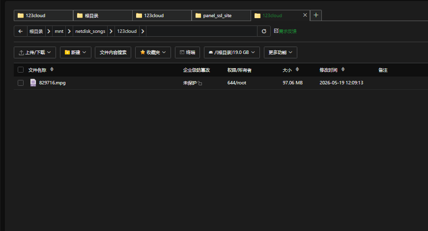

桃濑玲奈
@MomoseReina
@meiqinyuban 因为openlist就是alist的开源社区迭代
部分网盘在alist出事后就关闭了对alist的接口

美琴御坂🏳️🌈
@meiqinyuban
测试最终成果，还是openlist好用，比alist好上不少，改了ngnix配置，ngnix自动判断点歌机请求的歌曲文件在哪个路径，放了一个歌曲文件做测试，机器可以正常从服务器外挂的123网盘下载并播放，过两天有时间了研究一下如何更新总库，该机器更新总库db文件有crc校验和版本号提示文件，就很麻烦 https://t.co/HuvnLMBsze https://t.co/XBXV3Kwwb0